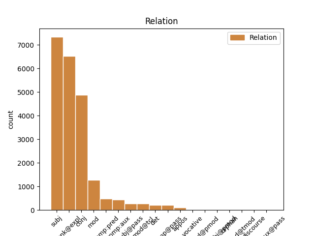
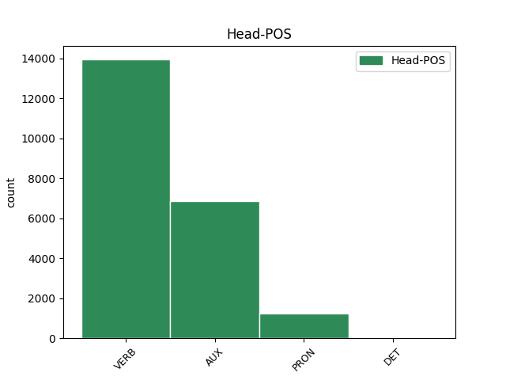
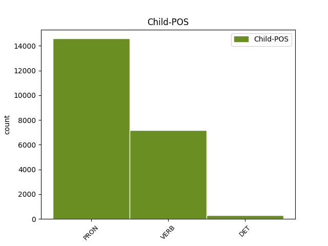

Distribution of features within this leaf



Agreement Rules sorted by frequency.
- When the dependent token is the subject(subj) of the head token, and the dependent token is PRON.
1 Care _ _ _ _ 0 _ _ _
2 s _ _ _ _ 0 _ _ _
3 -au _ _ _ _ 0 _ _ _
4 întărit _ _ _ _ 0 _ _ _
5 și _ _ _ _ 0 _ _ _
6 de _ _ _ _ 0 _ _ _
7 Domnia _ _ _ _ 0 _ _ _
8 mea _ _ _ _ 0 _ _ _
9 legiuindu _ _ _ _ 0 _ _ _
10 -să _ _ _ _ 0 _ _ _
11 și _ _ _ _ 0 _ _ _
12 aceaste _ _ _ _ 0 _ _ _
13 Ponturi _ _ _ _ 0 _ _ _
14 , _ _ _ _ 0 _ _ _
15 adăogat _ _ _ _ 0 _ _ _
16 în _ _ _ _ 0 _ _ _
17 pravela _ _ _ _ 0 _ _ _
18 pămîntului _ _ _ _ 0 _ _ _
19 , _ _ _ _ 0 _ _ _
20 supt _ _ _ _ 0 _ _ _
21 peceatea _ _ _ _ 0 _ _ _
22 Domnii _ _ _ _ 0 _ _ _
23 meale _ _ _ _ 0 _ _ _
24 precum _ _ _ _ 0 _ _ _
25 să _ _ _ _ 0 _ _ _
26 arată _ _ _ _ 0 _ _ _
27 mai _ _ _ _ 0 _ _ _
28 sus _ _ _ _ 0 _ _ _
29 , _ _ _ _ 0 _ _ _
30 care care PRON Pw3--r Case=Acc,Nom|Person=3|PronType=Int,Rel 32 subj _ ref=COMPLETARE.10
31 s _ _ _ _ 0 _ _ _
32 -au avea AUX Vaip3s Mood=Ind|Number=Sing|Person=3|Tense=Pres 0 _ _ _
33 și _ _ _ _ 0 _ _ _
34 publicarisit _ _ _ _ 0 _ _ _
35 prin _ _ _ _ 0 _ _ _
36 toate _ _ _ _ 0 _ _ _
37 Judecătoriile _ _ _ _ 0 _ _ _
38 din _ _ _ _ 0 _ _ _
39 Domneasca _ _ _ _ 0 _ _ _
40 noastră _ _ _ _ 0 _ _ _
41 Ţară _ _ _ _ 0 _ _ _
42 , _ _ _ _ 0 _ _ _
43 și _ _ _ _ 0 _ _ _
44 cătră _ _ _ _ 0 _ _ _
45 toți _ _ _ _ 0 _ _ _
46 lăcuitorii _ _ _ _ 0 _ _ _
47 de _ _ _ _ 0 _ _ _
48 obște _ _ _ _ 0 _ _ _
49 ca _ _ _ _ 0 _ _ _
50 să _ _ _ _ 0 _ _ _
51 fie _ _ _ _ 0 _ _ _
52 știute _ _ _ _ 0 _ _ _
53 și _ _ _ _ 0 _ _ _
54 să _ _ _ _ 0 _ _ _
55 se _ _ _ _ 0 _ _ _
56 urmeaze _ _ _ _ 0 _ _ _
57 făr _ _ _ _ 0 _ _ _
58 de _ _ _ _ 0 _ _ _
59 strămutare _ _ _ _ 0 _ _ _
60 . _ _ _ _ 0 _ _ _
1 Care _ _ _ _ 0 _ _ _
2 s _ _ _ _ 0 _ _ _
3 -au _ _ _ _ 0 _ _ _
4 întărit _ _ _ _ 0 _ _ _
5 și _ _ _ _ 0 _ _ _
6 de _ _ _ _ 0 _ _ _
7 Domnia _ _ _ _ 0 _ _ _
8 mea _ _ _ _ 0 _ _ _
9 legiuindu _ _ _ _ 0 _ _ _
10 -să _ _ _ _ 0 _ _ _
11 și _ _ _ _ 0 _ _ _
12 aceaste _ _ _ _ 0 _ _ _
13 Ponturi _ _ _ _ 0 _ _ _
14 , _ _ _ _ 0 _ _ _
15 adăogat _ _ _ _ 0 _ _ _
16 în _ _ _ _ 0 _ _ _
17 pravela _ _ _ _ 0 _ _ _
18 pămîntului _ _ _ _ 0 _ _ _
19 , _ _ _ _ 0 _ _ _
20 supt _ _ _ _ 0 _ _ _
21 peceatea _ _ _ _ 0 _ _ _
22 Domnii _ _ _ _ 0 _ _ _
23 meale _ _ _ _ 0 _ _ _
24 precum _ _ _ _ 0 _ _ _
25 să _ _ _ _ 0 _ _ _
26 arată _ _ _ _ 0 _ _ _
27 mai _ _ _ _ 0 _ _ _
28 sus _ _ _ _ 0 _ _ _
29 , _ _ _ _ 0 _ _ _
30 care _ _ _ _ 0 _ _ _
31 s _ _ _ _ 0 _ _ _
32 -au _ _ _ _ 0 _ _ _
33 și _ _ _ _ 0 _ _ _
34 publicarisit _ _ _ _ 0 _ _ _
35 prin _ _ _ _ 0 _ _ _
36 toate _ _ _ _ 0 _ _ _
37 Judecătoriile _ _ _ _ 0 _ _ _
38 din _ _ _ _ 0 _ _ _
39 Domneasca _ _ _ _ 0 _ _ _
40 noastră _ _ _ _ 0 _ _ _
41 Ţară _ _ _ _ 0 _ _ _
42 , _ _ _ _ 0 _ _ _
43 și _ _ _ _ 0 _ _ _
44 cătră _ _ _ _ 0 _ _ _
45 toți _ _ _ _ 0 _ _ _
46 lăcuitorii _ _ _ _ 0 _ _ _
47 de _ _ _ _ 0 _ _ _
48 obște _ _ _ _ 0 _ _ _
49 ca _ _ _ _ 0 _ _ _
50 să _ _ _ _ 0 _ _ _
51 fie _ _ _ _ 0 _ _ _
52 știute _ _ _ _ 0 _ _ _
53 și _ _ _ _ 0 _ _ _
54 să _ _ _ _ 0 _ _ _
55 se sine PRON Px3--a--------w Case=Acc|Person=3|PronType=Prs|Strength=Weak 56 unk@expl _ ref=COMPLETARE.10
56 urmeaze urma VERB Vmsp3 Mood=Sub|Person=3|Tense=Pres|VerbForm=Fin 0 _ _ _
57 făr _ _ _ _ 0 _ _ _
58 de _ _ _ _ 0 _ _ _
59 strămutare _ _ _ _ 0 _ _ _
60 . _ _ _ _ 0 _ _ _
1 Prea _ _ _ _ 0 _ _ _
2 Înălțate _ _ _ _ 0 _ _ _
3 Doamne _ _ _ _ 0 _ _ _
4 ! _ _ _ _ 0 _ _ _
5 După _ _ _ _ 0 _ _ _
6 luminată _ _ _ _ 0 _ _ _
7 porunca _ _ _ _ 0 _ _ _
8 Mării _ _ _ _ 0 _ _ _
9 tale _ _ _ _ 0 _ _ _
10 adunîndu _ _ _ _ 0 _ _ _
11 -ne _ _ _ _ 0 _ _ _
12 în _ _ _ _ 0 _ _ _
13 multe _ _ _ _ 0 _ _ _
14 rînduri _ _ _ _ 0 _ _ _
15 cu _ _ _ _ 0 _ _ _
16 toții _ _ _ _ 0 _ _ _
17 la _ _ _ _ 0 _ _ _
18 un _ _ _ _ 0 _ _ _
19 loc _ _ _ _ 0 _ _ _
20 , _ _ _ _ 0 _ _ _
21 am avea AUX Vaip1p Mood=Ind|Number=Plur|Person=1|Tense=Pres 0 _ _ _
22 cetit _ _ _ _ 0 _ _ _
23 cu _ _ _ _ 0 _ _ _
24 luare _ _ _ _ 0 _ _ _
25 aminte _ _ _ _ 0 _ _ _
26 Pravila _ _ _ _ 0 _ _ _
27 ce _ _ _ _ 0 _ _ _
28 s _ _ _ _ 0 _ _ _
29 -au _ _ _ _ 0 _ _ _
30 alcătuit _ _ _ _ 0 _ _ _
31 de _ _ _ _ 0 _ _ _
32 cătră _ _ _ _ 0 _ _ _
33 Măria _ _ _ _ 0 _ _ _
34 ta _ _ _ _ 0 _ _ _
35 , _ _ _ _ 0 _ _ _
36 și _ _ _ _ 0 _ _ _
37 ne _ _ _ _ 0 _ _ _
38 pliroforisirăm pliroforisi VERB Vmis1p Mood=Ind|Number=Plur|Person=1|Tense=Past|VerbForm=Fin 21 conj _ ref=ANAFORA.1|SpaceAfter=No
39 , _ _ _ _ 0 _ _ _
40 că _ _ _ _ 0 _ _ _
41 alcătuirea _ _ _ _ 0 _ _ _
42 aceștii _ _ _ _ 0 _ _ _
43 Pravili _ _ _ _ 0 _ _ _
44 este _ _ _ _ 0 _ _ _
45 o _ _ _ _ 0 _ _ _
46 deslușire _ _ _ _ 0 _ _ _
47 a _ _ _ _ 0 _ _ _
48 Pravililor _ _ _ _ 0 _ _ _
49 Împărătești _ _ _ _ 0 _ _ _
50 , _ _ _ _ 0 _ _ _
51 ce _ _ _ _ 0 _ _ _
52 să _ _ _ _ 0 _ _ _
53 obicinuesc _ _ _ _ 0 _ _ _
54 aici _ _ _ _ 0 _ _ _
55 în _ _ _ _ 0 _ _ _
56 pămîntul _ _ _ _ 0 _ _ _
57 nostru _ _ _ _ 0 _ _ _
58 , _ _ _ _ 0 _ _ _
59 și _ _ _ _ 0 _ _ _
60 a _ _ _ _ 0 _ _ _
61 vechilor _ _ _ _ 0 _ _ _
62 , _ _ _ _ 0 _ _ _
63 și _ _ _ _ 0 _ _ _
64 a _ _ _ _ 0 _ _ _
65 canonisitelor _ _ _ _ 0 _ _ _
66 obiceaiuri _ _ _ _ 0 _ _ _
67 ale _ _ _ _ 0 _ _ _
68 pămîntului _ _ _ _ 0 _ _ _
69 , _ _ _ _ 0 _ _ _
70 nefiind _ _ _ _ 0 _ _ _
71 împotrivitoare _ _ _ _ 0 _ _ _
72 celor _ _ _ _ 0 _ _ _
73 vechi _ _ _ _ 0 _ _ _
74 urmate _ _ _ _ 0 _ _ _
75 pînă _ _ _ _ 0 _ _ _
76 acum _ _ _ _ 0 _ _ _
77 . _ _ _ _ 0 _ _ _
1 Fiind _ _ _ _ 0 _ _ _
2 orînduit _ _ _ _ 0 _ _ _
3 de _ _ _ _ 0 _ _ _
4 am _ _ _ _ 0 _ _ _
5 protocolit _ _ _ _ 0 _ _ _
6 toate _ _ _ _ 0 _ _ _
7 acestea _ _ _ _ 0 _ _ _
8 Prăvili _ _ _ _ 0 _ _ _
9 după _ _ _ _ 0 _ _ _
10 izvoadele _ _ _ _ 0 _ _ _
11 ce _ _ _ _ 0 _ _ _
12 prin _ _ _ _ 0 _ _ _
13 sfat _ _ _ _ 0 _ _ _
14 de _ _ _ _ 0 _ _ _
15 obște _ _ _ _ 0 _ _ _
16 s _ _ _ _ 0 _ _ _
17 -au _ _ _ _ 0 _ _ _
18 alcătuit _ _ _ _ 0 _ _ _
19 și _ _ _ _ 0 _ _ _
20 găsindu _ _ _ _ 0 _ _ _
21 -le _ _ _ _ 0 _ _ _
22 întocmai _ _ _ _ 0 _ _ _
23 așezate _ _ _ _ 0 _ _ _
24 din _ _ _ _ 0 _ _ _
25 cuvînt _ _ _ _ 0 _ _ _
26 în _ _ _ _ 0 _ _ _
27 cuvînt _ _ _ _ 0 _ _ _
28 și _ _ _ _ 0 _ _ _
29 fără _ _ _ _ 0 _ _ _
30 cîtuși _ _ _ _ 0 _ _ _
31 de _ _ _ _ 0 _ _ _
32 puțină _ _ _ _ 0 _ _ _
33 schimbare _ _ _ _ 0 _ _ _
34 le- _ _ _ _ 0 _ _ _
35 am avea AUX Vaip1p Mood=Ind|Number=Plur|Person=1|Tense=Pres 0 _ _ _
36 adeverit _ _ _ _ 0 _ _ _
37 și _ _ _ _ 0 _ _ _
38 însum _ _ _ _ 0 _ _ _
39 cu _ _ _ _ 0 _ _ _
40 iscălitura _ _ _ _ 0 _ _ _
41 în _ _ _ _ 0 _ _ _
42 toate _ _ _ _ 0 _ _ _
43 foile _ _ _ _ 0 _ _ _
44 precum _ _ _ _ 0 _ _ _
45 să _ _ _ _ 0 _ _ _
46 văd vedea VERB Vmsp1s Mood=Sub|Number=Sing|Person=1|Tense=Pres|VerbForm=Fin 35 mod _ ref=ANAFORA.4
47 în _ _ _ _ 0 _ _ _
48 jos _ _ _ _ 0 _ _ _
49 punîndu _ _ _ _ 0 _ _ _
50 -să _ _ _ _ 0 _ _ _
51 și _ _ _ _ 0 _ _ _
52 Luminată _ _ _ _ 0 _ _ _
53 Peceatea _ _ _ _ 0 _ _ _
54 Mării _ _ _ _ 0 _ _ _
55 sale _ _ _ _ 0 _ _ _
56 la _ _ _ _ 0 _ _ _
57 fieștecare _ _ _ _ 0 _ _ _
58 foae _ _ _ _ 0 _ _ _
59 . _ _ _ _ 0 _ _ _
1 Ducîndu _ _ _ _ 0 _ _ _
2 -l _ _ _ _ 0 _ _ _
3 , _ _ _ _ 0 _ _ _
4 ori _ _ _ _ 0 _ _ _
5 la _ _ _ _ 0 _ _ _
6 moșia _ _ _ _ 0 _ _ _
7 lui _ _ _ _ 0 _ _ _
8 , _ _ _ _ 0 _ _ _
9 sau _ _ _ _ 0 _ _ _
10 aiurea _ _ _ _ 0 _ _ _
11 unde _ _ _ _ 0 _ _ _
12 are _ _ _ _ 0 _ _ _
13 trebuință _ _ _ _ 0 _ _ _
14 , _ _ _ _ 0 _ _ _
15 pînă _ _ _ _ 0 _ _ _
16 la _ _ _ _ 0 _ _ _
17 un _ _ _ _ 0 _ _ _
18 loc _ _ _ _ 0 _ _ _
19 cale _ _ _ _ 0 _ _ _
20 de _ _ _ _ 0 _ _ _
21 șase _ _ _ _ 0 _ _ _
22 ceasuri _ _ _ _ 0 _ _ _
23 , _ _ _ _ 0 _ _ _
24 iar _ _ _ _ 0 _ _ _
25 cînd _ _ _ _ 0 _ _ _
26 va _ _ _ _ 0 _ _ _
27 fi _ _ _ _ 0 _ _ _
28 locul _ _ _ _ 0 _ _ _
29 unde _ _ _ _ 0 _ _ _
30 ceare _ _ _ _ 0 _ _ _
31 stăpînul _ _ _ _ 0 _ _ _
32 mai _ _ _ _ 0 _ _ _
33 depărtat _ _ _ _ 0 _ _ _
34 decît _ _ _ _ 0 _ _ _
35 cale _ _ _ _ 0 _ _ _
36 de _ _ _ _ 0 _ _ _
37 șase _ _ _ _ 0 _ _ _
38 ceasuri _ _ _ _ 0 _ _ _
39 , _ _ _ _ 0 _ _ _
40 sau _ _ _ _ 0 _ _ _
41 nu _ _ _ _ 0 _ _ _
42 va vrea AUX Vaip3s Mood=Ind|Number=Sing|Person=3|Tense=Pres 0 _ _ _
43 avea avea VERB Vmii3s Mood=Ind|Number=Sing|Person=3|Tense=Imp|VerbForm=Fin 42 comp:aux _ ref=COMPLETARE.6
44 stăpînul _ _ _ _ 0 _ _ _
45 trebuință _ _ _ _ 0 _ _ _
46 de _ _ _ _ 0 _ _ _
47 leamne _ _ _ _ 0 _ _ _
48 , _ _ _ _ 0 _ _ _
49 atunci _ _ _ _ 0 _ _ _
50 să _ _ _ _ 0 _ _ _
51 plătească _ _ _ _ 0 _ _ _
52 clăcașul _ _ _ _ 0 _ _ _
53 cu _ _ _ _ 0 _ _ _
54 bani _ _ _ _ 0 _ _ _
55 , _ _ _ _ 0 _ _ _
56 carul _ _ _ _ 0 _ _ _
57 po _ _ _ _ 0 _ _ _
58 talere _ _ _ _ 0 _ _ _
59 trei _ _ _ _ 0 _ _ _
60 . _ _ _ _ 0 _ _ _
1 Prea _ _ _ _ 0 _ _ _
2 Înălțate _ _ _ _ 0 _ _ _
3 Doamne _ _ _ _ 0 _ _ _
4 ! _ _ _ _ 0 _ _ _
5 După _ _ _ _ 0 _ _ _
6 luminată _ _ _ _ 0 _ _ _
7 porunca _ _ _ _ 0 _ _ _
8 Mării _ _ _ _ 0 _ _ _
9 tale _ _ _ _ 0 _ _ _
10 adunîndu _ _ _ _ 0 _ _ _
11 -ne _ _ _ _ 0 _ _ _
12 în _ _ _ _ 0 _ _ _
13 multe _ _ _ _ 0 _ _ _
14 rînduri _ _ _ _ 0 _ _ _
15 cu _ _ _ _ 0 _ _ _
16 toții _ _ _ _ 0 _ _ _
17 la _ _ _ _ 0 _ _ _
18 un _ _ _ _ 0 _ _ _
19 loc _ _ _ _ 0 _ _ _
20 , _ _ _ _ 0 _ _ _
21 am _ _ _ _ 0 _ _ _
22 cetit _ _ _ _ 0 _ _ _
23 cu _ _ _ _ 0 _ _ _
24 luare _ _ _ _ 0 _ _ _
25 aminte _ _ _ _ 0 _ _ _
26 Pravila _ _ _ _ 0 _ _ _
27 ce ce PRON Pw3--r Case=Acc,Nom|Person=3|PronType=Int,Rel 29 subj@pass _ ref=ANAFORA.1
28 s _ _ _ _ 0 _ _ _
29 -au avea AUX Vaip3s Mood=Ind|Number=Sing|Person=3|Tense=Pres 0 _ _ _
30 alcătuit _ _ _ _ 0 _ _ _
31 de _ _ _ _ 0 _ _ _
32 cătră _ _ _ _ 0 _ _ _
33 Măria _ _ _ _ 0 _ _ _
34 ta _ _ _ _ 0 _ _ _
35 , _ _ _ _ 0 _ _ _
36 și _ _ _ _ 0 _ _ _
37 ne _ _ _ _ 0 _ _ _
38 pliroforisirăm _ _ _ _ 0 _ _ _
39 , _ _ _ _ 0 _ _ _
40 că _ _ _ _ 0 _ _ _
41 alcătuirea _ _ _ _ 0 _ _ _
42 aceștii _ _ _ _ 0 _ _ _
43 Pravili _ _ _ _ 0 _ _ _
44 este _ _ _ _ 0 _ _ _
45 o _ _ _ _ 0 _ _ _
46 deslușire _ _ _ _ 0 _ _ _
47 a _ _ _ _ 0 _ _ _
48 Pravililor _ _ _ _ 0 _ _ _
49 Împărătești _ _ _ _ 0 _ _ _
50 , _ _ _ _ 0 _ _ _
51 ce _ _ _ _ 0 _ _ _
52 să _ _ _ _ 0 _ _ _
53 obicinuesc _ _ _ _ 0 _ _ _
54 aici _ _ _ _ 0 _ _ _
55 în _ _ _ _ 0 _ _ _
56 pămîntul _ _ _ _ 0 _ _ _
57 nostru _ _ _ _ 0 _ _ _
58 , _ _ _ _ 0 _ _ _
59 și _ _ _ _ 0 _ _ _
60 a _ _ _ _ 0 _ _ _
61 vechilor _ _ _ _ 0 _ _ _
62 , _ _ _ _ 0 _ _ _
63 și _ _ _ _ 0 _ _ _
64 a _ _ _ _ 0 _ _ _
65 canonisitelor _ _ _ _ 0 _ _ _
66 obiceaiuri _ _ _ _ 0 _ _ _
67 ale _ _ _ _ 0 _ _ _
68 pămîntului _ _ _ _ 0 _ _ _
69 , _ _ _ _ 0 _ _ _
70 nefiind _ _ _ _ 0 _ _ _
71 împotrivitoare _ _ _ _ 0 _ _ _
72 celor _ _ _ _ 0 _ _ _
73 vechi _ _ _ _ 0 _ _ _
74 urmate _ _ _ _ 0 _ _ _
75 pînă _ _ _ _ 0 _ _ _
76 acum _ _ _ _ 0 _ _ _
77 . _ _ _ _ 0 _ _ _
1 Cîți _ _ _ _ 0 _ _ _
2 fac face VERB Vmip3p Mood=Ind|Number=Plur|Person=3|Tense=Pres|VerbForm=Fin 19 subj _ ref=PART_IV_CAP_5.5.9
3 fii _ _ _ _ 0 _ _ _
4 de _ _ _ _ 0 _ _ _
5 suflet _ _ _ _ 0 _ _ _
6 și _ _ _ _ 0 _ _ _
7 drept _ _ _ _ 0 _ _ _
8 adevărați _ _ _ _ 0 _ _ _
9 pre _ _ _ _ 0 _ _ _
10 copiii _ _ _ _ 0 _ _ _
11 lor _ _ _ _ 0 _ _ _
12 ce _ _ _ _ 0 _ _ _
13 nu _ _ _ _ 0 _ _ _
14 sînt _ _ _ _ 0 _ _ _
15 din _ _ _ _ 0 _ _ _
16 cununie _ _ _ _ 0 _ _ _
17 , _ _ _ _ 0 _ _ _
18 slobozi _ _ _ _ 0 _ _ _
19 sînt fi AUX Vaip3p Mood=Ind|Number=Plur|Person=3|Tense=Pres 0 _ _ _
20 și _ _ _ _ 0 _ _ _
21 cu _ _ _ _ 0 _ _ _
22 diiata _ _ _ _ 0 _ _ _
23 lor _ _ _ _ 0 _ _ _
24 , _ _ _ _ 0 _ _ _
25 să _ _ _ _ 0 _ _ _
26 -i _ _ _ _ 0 _ _ _
27 facă _ _ _ _ 0 _ _ _
28 fii _ _ _ _ 0 _ _ _
29 de _ _ _ _ 0 _ _ _
30 suflet _ _ _ _ 0 _ _ _
31 și _ _ _ _ 0 _ _ _
32 adevărați _ _ _ _ 0 _ _ _
33 . _ _ _ _ 0 _ _ _
1 Cîte _ _ _ _ 0 _ _ _
2 fata _ _ _ _ 0 _ _ _
3 sărmană _ _ _ _ 0 _ _ _
4 , _ _ _ _ 0 _ _ _
5 sau _ _ _ _ 0 _ _ _
6 văduva _ _ _ _ 0 _ _ _
7 sărmană _ _ _ _ 0 _ _ _
8 vor vrea AUX Vaip3p Mood=Ind|Number=Plur|Person=3|Tense=Pres 0 _ _ _
9 așăza _ _ _ _ 0 _ _ _
10 cu _ _ _ _ 0 _ _ _
11 bărbatul _ _ _ _ 0 _ _ _
12 lor _ _ _ _ 0 _ _ _
13 cînd _ _ _ _ 0 _ _ _
14 să _ _ _ _ 0 _ _ _
15 mărită mărita VERB Vmip3s Mood=Ind|Number=Sing|Person=3|Tense=Pres|VerbForm=Fin 8 mod@tcl _ ref=PART_III_CAP_16b.25|SpaceAfter=No
16 , _ _ _ _ 0 _ _ _
17 rămîn _ _ _ _ 0 _ _ _
18 nestrămutate _ _ _ _ 0 _ _ _
19 . _ _ _ _ 0 _ _ _
1 Prea _ _ _ _ 0 _ _ _
2 Înălțate _ _ _ _ 0 _ _ _
3 Doamne _ _ _ _ 0 _ _ _
4 ! _ _ _ _ 0 _ _ _
5 După _ _ _ _ 0 _ _ _
6 luminată _ _ _ _ 0 _ _ _
7 porunca _ _ _ _ 0 _ _ _
8 Mării _ _ _ _ 0 _ _ _
9 tale _ _ _ _ 0 _ _ _
10 adunîndu _ _ _ _ 0 _ _ _
11 -ne _ _ _ _ 0 _ _ _
12 în _ _ _ _ 0 _ _ _
13 multe _ _ _ _ 0 _ _ _
14 rînduri _ _ _ _ 0 _ _ _
15 cu _ _ _ _ 0 _ _ _
16 toții _ _ _ _ 0 _ _ _
17 la _ _ _ _ 0 _ _ _
18 un _ _ _ _ 0 _ _ _
19 loc _ _ _ _ 0 _ _ _
20 , _ _ _ _ 0 _ _ _
21 am _ _ _ _ 0 _ _ _
22 cetit _ _ _ _ 0 _ _ _
23 cu _ _ _ _ 0 _ _ _
24 luare _ _ _ _ 0 _ _ _
25 aminte _ _ _ _ 0 _ _ _
26 Pravila _ _ _ _ 0 _ _ _
27 ce _ _ _ _ 0 _ _ _
28 s sine PRON Px3--a--------w Case=Acc|Person=3|PronType=Prs|Strength=Weak 29 comp@pass _ ref=ANAFORA.1|SpaceAfter=No
29 -au avea AUX Vaip3s Mood=Ind|Number=Sing|Person=3|Tense=Pres 0 _ _ _
30 alcătuit _ _ _ _ 0 _ _ _
31 de _ _ _ _ 0 _ _ _
32 cătră _ _ _ _ 0 _ _ _
33 Măria _ _ _ _ 0 _ _ _
34 ta _ _ _ _ 0 _ _ _
35 , _ _ _ _ 0 _ _ _
36 și _ _ _ _ 0 _ _ _
37 ne _ _ _ _ 0 _ _ _
38 pliroforisirăm _ _ _ _ 0 _ _ _
39 , _ _ _ _ 0 _ _ _
40 că _ _ _ _ 0 _ _ _
41 alcătuirea _ _ _ _ 0 _ _ _
42 aceștii _ _ _ _ 0 _ _ _
43 Pravili _ _ _ _ 0 _ _ _
44 este _ _ _ _ 0 _ _ _
45 o _ _ _ _ 0 _ _ _
46 deslușire _ _ _ _ 0 _ _ _
47 a _ _ _ _ 0 _ _ _
48 Pravililor _ _ _ _ 0 _ _ _
49 Împărătești _ _ _ _ 0 _ _ _
50 , _ _ _ _ 0 _ _ _
51 ce _ _ _ _ 0 _ _ _
52 să _ _ _ _ 0 _ _ _
53 obicinuesc _ _ _ _ 0 _ _ _
54 aici _ _ _ _ 0 _ _ _
55 în _ _ _ _ 0 _ _ _
56 pămîntul _ _ _ _ 0 _ _ _
57 nostru _ _ _ _ 0 _ _ _
58 , _ _ _ _ 0 _ _ _
59 și _ _ _ _ 0 _ _ _
60 a _ _ _ _ 0 _ _ _
61 vechilor _ _ _ _ 0 _ _ _
62 , _ _ _ _ 0 _ _ _
63 și _ _ _ _ 0 _ _ _
64 a _ _ _ _ 0 _ _ _
65 canonisitelor _ _ _ _ 0 _ _ _
66 obiceaiuri _ _ _ _ 0 _ _ _
67 ale _ _ _ _ 0 _ _ _
68 pămîntului _ _ _ _ 0 _ _ _
69 , _ _ _ _ 0 _ _ _
70 nefiind _ _ _ _ 0 _ _ _
71 împotrivitoare _ _ _ _ 0 _ _ _
72 celor _ _ _ _ 0 _ _ _
73 vechi _ _ _ _ 0 _ _ _
74 urmate _ _ _ _ 0 _ _ _
75 pînă _ _ _ _ 0 _ _ _
76 acum _ _ _ _ 0 _ _ _
77 . _ _ _ _ 0 _ _ _
1 Cine _ _ _ _ 0 _ _ _
2 cere _ _ _ _ 0 _ _ _
3 atunci _ _ _ _ 0 _ _ _
4 căștigă _ _ _ _ 0 _ _ _
5 , _ _ _ _ 0 _ _ _
6 cînd _ _ _ _ 0 _ _ _
7 va _ _ _ _ 0 _ _ _
8 dovedi _ _ _ _ 0 _ _ _
9 că _ _ _ _ 0 _ _ _
10 lucrul _ _ _ _ 0 _ _ _
11 ce _ _ _ _ 0 _ _ _
12 să _ _ _ _ 0 _ _ _
13 cere _ _ _ _ 0 _ _ _
14 iaste fi AUX Vaip3s Mood=Ind|Number=Sing|Person=3|Tense=Pres 0 _ _ _
15 al _ _ _ _ 0 _ _ _
16 lui el PRON Pd3mso Case=Dat,Gen|Gender=Masc|Number=Sing|Person=3|PronType=Dem 14 comp:pred _ ref=PART_V_CAP_2.4|SpaceAfter=No
17 , _ _ _ _ 0 _ _ _
18 iară _ _ _ _ 0 _ _ _
19 nu _ _ _ _ 0 _ _ _
20 cînd _ _ _ _ 0 _ _ _
21 va _ _ _ _ 0 _ _ _
22 dovedi _ _ _ _ 0 _ _ _
23 că _ _ _ _ 0 _ _ _
24 nu _ _ _ _ 0 _ _ _
25 iaste _ _ _ _ 0 _ _ _
26 al _ _ _ _ 0 _ _ _
27 protivnicului _ _ _ _ 0 _ _ _
28 său _ _ _ _ 0 _ _ _
29 . _ _ _ _ 0 _ _ _
1 Din _ _ _ _ 0 _ _ _
2 Luminată _ _ _ _ 0 _ _ _
3 poruncă _ _ _ _ 0 _ _ _
4 a _ _ _ _ 0 _ _ _
5 Mării mărie PRON Pp3fsoy Case=Dat,Gen|Gender=Fem|Number=Sing|Person=3|Polite=Form|PronType=Prs 0 _ _ _
6 sale său DET Ds3fsos Case=Dat,Gen|Gender=Fem|Number=Sing|Number[psor]=Sing|Person=3|PronType=Prs 5 det _ ref=ANAFORA.3
7 Prea _ _ _ _ 0 _ _ _
8 Înălțatului _ _ _ _ 0 _ _ _
9 nostru _ _ _ _ 0 _ _ _
10 Domn _ _ _ _ 0 _ _ _
11 Io _ _ _ _ 0 _ _ _
12 Ioann _ _ _ _ 0 _ _ _
13 Gheorghie _ _ _ _ 0 _ _ _
14 Caragea _ _ _ _ 0 _ _ _
15 , _ _ _ _ 0 _ _ _
16 Vv _ _ _ _ 0 _ _ _
17 . _ _ _ _ 0 _ _ _
1 Cîți _ _ _ _ 0 _ _ _
2 fac _ _ _ _ 0 _ _ _
3 zapise _ _ _ _ 0 _ _ _
4 mincinoase _ _ _ _ 0 _ _ _
5 , _ _ _ _ 0 _ _ _
6 de _ _ _ _ 0 _ _ _
7 datorie _ _ _ _ 0 _ _ _
8 particularii _ _ _ _ 0 _ _ _
9 , _ _ _ _ 0 _ _ _
10 să _ _ _ _ 0 _ _ _
11 plătească _ _ _ _ 0 _ _ _
12 îndoit _ _ _ _ 0 _ _ _
13 de _ _ _ _ 0 _ _ _
14 ceea _ _ _ _ 0 _ _ _
15 ce _ _ _ _ 0 _ _ _
16 era fi AUX Vaii3s Mood=Ind|Number=Sing|Person=3|Tense=Imp 0 _ _ _
17 să _ _ _ _ 0 _ _ _
18 cîștige câștiga VERB Vmsp3 Mood=Sub|Person=3|Tense=Pres|VerbForm=Fin 16 comp:pred _ ref=PART_V_CAP_5.3
19 cu _ _ _ _ 0 _ _ _
20 zapisul _ _ _ _ 0 _ _ _
21 cel _ _ _ _ 0 _ _ _
22 mincinos _ _ _ _ 0 _ _ _
23 . _ _ _ _ 0 _ _ _
1 Aseamenea _ _ _ _ 0 _ _ _
2 să _ _ _ _ 0 _ _ _
3 să _ _ _ _ 0 _ _ _
4 urmeaze _ _ _ _ 0 _ _ _
5 de _ _ _ _ 0 _ _ _
6 Dumnialui dumnealui PRON Pp3msr Case=Acc,Nom|Gender=Masc|Number=Sing|Person=3|PronType=Prs 0 _ _ _
7 Vel _ _ _ _ 0 _ _ _
8 Spătariu _ _ _ _ 0 _ _ _
9 , _ _ _ _ 0 _ _ _
10 Dumnialui dumnealui PRON Pp3msr Case=Acc,Nom|Gender=Masc|Number=Sing|Person=3|PronType=Prs 6 conj _ ref=PART_V_CAP_3.15d
11 Vel _ _ _ _ 0 _ _ _
12 Agă _ _ _ _ 0 _ _ _
13 și _ _ _ _ 0 _ _ _
14 de _ _ _ _ 0 _ _ _
15 Boerii _ _ _ _ 0 _ _ _
16 Ispravnici _ _ _ _ 0 _ _ _
17 , _ _ _ _ 0 _ _ _
18 cînd _ _ _ _ 0 _ _ _
19 iaste _ _ _ _ 0 _ _ _
20 vreo _ _ _ _ 0 _ _ _
21 hotărîre _ _ _ _ 0 _ _ _
22 de _ _ _ _ 0 _ _ _
23 la _ _ _ _ 0 _ _ _
24 judecățile _ _ _ _ 0 _ _ _
25 Dumnialor _ _ _ _ 0 _ _ _
26 . _ _ _ _ 0 _ _ _
1 Cîți _ _ _ _ 0 _ _ _
2 din _ _ _ _ 0 _ _ _
3 cei _ _ _ _ 0 _ _ _
4 ce _ _ _ _ 0 _ _ _
5 au _ _ _ _ 0 _ _ _
6 pricină _ _ _ _ 0 _ _ _
7 de _ _ _ _ 0 _ _ _
8 judecată _ _ _ _ 0 _ _ _
9 , _ _ _ _ 0 _ _ _
10 chemîndu- _ _ _ _ 0 _ _ _
11 să _ _ _ _ 0 _ _ _
12 în _ _ _ _ 0 _ _ _
13 doao _ _ _ _ 0 _ _ _
14 rănduri _ _ _ _ 0 _ _ _
15 de _ _ _ _ 0 _ _ _
16 cătră _ _ _ _ 0 _ _ _
17 judecători _ _ _ _ 0 _ _ _
18 , _ _ _ _ 0 _ _ _
19 nu _ _ _ _ 0 _ _ _
20 vor _ _ _ _ 0 _ _ _
21 veni veni VERB Vmip3s Mood=Ind|Number=Sing|Person=3|Tense=Pres|VerbForm=Fin 0 _ _ _
22 , _ _ _ _ 0 _ _ _
23 și _ _ _ _ 0 _ _ _
24 să _ _ _ _ 0 _ _ _
25 vor _ _ _ _ 0 _ _ _
26 osîndi _ _ _ _ 0 _ _ _
27 , _ _ _ _ 0 _ _ _
28 aceia acela PRON Pd3mpr Case=Acc,Nom|Gender=Masc|Number=Plur|Person=3|PronType=Dem 21 appos _ ref=PART_V_CAP_4.4
29 nu _ _ _ _ 0 _ _ _
30 pot _ _ _ _ 0 _ _ _
31 porni _ _ _ _ 0 _ _ _
32 Apellație _ _ _ _ 0 _ _ _
33 . _ _ _ _ 0 _ _ _
1 Să _ _ _ _ 0 _ _ _
2 dea _ _ _ _ 0 _ _ _
3 clăcașul _ _ _ _ 0 _ _ _
4 la _ _ _ _ 0 _ _ _
5 stăpînul _ _ _ _ 0 _ _ _
6 moșii _ _ _ _ 0 _ _ _
7 o _ _ _ _ 0 _ _ _
8 găină _ _ _ _ 0 _ _ _
9 de _ _ _ _ 0 _ _ _
10 Crăciun _ _ _ _ 0 _ _ _
11 și _ _ _ _ 0 _ _ _
12 un _ _ _ _ 0 _ _ _
13 puiu _ _ _ _ 0 _ _ _
14 de _ _ _ _ 0 _ _ _
15 găină _ _ _ _ 0 _ _ _
16 de _ _ _ _ 0 _ _ _
17 sînt _ _ _ _ 0 _ _ _
18 Pietru _ _ _ _ 0 _ _ _
19 ce ce DET Dw3--r Case=Acc,Nom|Person=3|PronType=Int,Rel 20 subj _ ref=COMPLETARE.7
20 sînt fi AUX Vaip3p Mood=Ind|Number=Plur|Person=3|Tense=Pres 0 _ _ _
21 obicinuite _ _ _ _ 0 _ _ _
22 , _ _ _ _ 0 _ _ _
23 făr _ _ _ _ 0 _ _ _
24 de _ _ _ _ 0 _ _ _
25 a _ _ _ _ 0 _ _ _
26 fi _ _ _ _ 0 _ _ _
27 volnic _ _ _ _ 0 _ _ _
28 acel _ _ _ _ 0 _ _ _
29 stăpîn _ _ _ _ 0 _ _ _
30 de _ _ _ _ 0 _ _ _
31 a _ _ _ _ 0 _ _ _
32 ceare _ _ _ _ 0 _ _ _
33 să _ _ _ _ 0 _ _ _
34 i _ _ _ _ 0 _ _ _
35 le _ _ _ _ 0 _ _ _
36 plătească _ _ _ _ 0 _ _ _
37 clăcașii _ _ _ _ 0 _ _ _
38 în _ _ _ _ 0 _ _ _
39 bani _ _ _ _ 0 _ _ _
40 , _ _ _ _ 0 _ _ _
41 ci _ _ _ _ 0 _ _ _
42 să _ _ _ _ 0 _ _ _
43 le _ _ _ _ 0 _ _ _
44 priimească _ _ _ _ 0 _ _ _
45 în _ _ _ _ 0 _ _ _
46 natură _ _ _ _ 0 _ _ _
47 . _ _ _ _ 0 _ _ _
1 Toate _ _ _ _ 0 _ _ _
2 tocmealile _ _ _ _ 0 _ _ _
3 lui _ _ _ _ 0 _ _ _
4 după _ _ _ _ 0 _ _ _
5 care _ _ _ _ 0 _ _ _
6 ori _ _ _ _ 0 _ _ _
7 el _ _ _ _ 0 _ _ _
8 iaste _ _ _ _ 0 _ _ _
9 altora _ _ _ _ 0 _ _ _
10 cevași _ _ _ _ 0 _ _ _
11 îndatorat _ _ _ _ 0 _ _ _
12 , _ _ _ _ 0 _ _ _
13 ori _ _ _ _ 0 _ _ _
14 alții altul PRON Pi3mpr Case=Acc,Nom|Gender=Masc|Number=Plur|Person=3|PronType=Ind 0 _ _ _
15 lui el PRON Pp3mso Case=Gen|Gender=Masc|Number=Sing|Person=3|PronType=Prs 14 mod _ ref=PART_IV_CAP_3.2.3|SpaceAfter=No
16 . _ _ _ _ 0 _ _ _
1 Să _ _ _ _ 0 _ _ _
2 te _ _ _ _ 0 _ _ _
3 însori însura VERB Vmsp2s Mood=Sub|Number=Sing|Person=2|Tense=Pres|VerbForm=Fin 0 _ _ _
4 , _ _ _ _ 0 _ _ _
5 bădiță _ _ _ _ 0 _ _ _
6 , _ _ _ _ 0 _ _ _
7 însori însori VERB Vmip2s Mood=Ind|Number=Sing|Person=2|Tense=Pres|VerbForm=Fin 3 appos _ Rhyme=11,ID3|SpaceAfter=No|Type=Rep
8 , _ _ _ _ 0 _ _ _
9 Să _ _ _ _ 0 _ _ _
10 te _ _ _ _ 0 _ _ _
11 însori _ _ _ _ 0 _ _ _
12 de _ _ _ _ 0 _ _ _
13 nouă _ _ _ _ 0 _ _ _
14 ori _ _ _ _ 0 _ _ _
15 Și _ _ _ _ 0 _ _ _
16 să _ _ _ _ 0 _ _ _
17 faci _ _ _ _ 0 _ _ _
18 nouă _ _ _ _ 0 _ _ _
19 feciori _ _ _ _ 0 _ _ _
20 Și _ _ _ _ 0 _ _ _
21 la _ _ _ _ 0 _ _ _
22 urmă _ _ _ _ 0 _ _ _
23 -o _ _ _ _ 0 _ _ _
24 copiliță _ _ _ _ 0 _ _ _
25 , _ _ _ _ 0 _ _ _
26 Să _ _ _ _ 0 _ _ _
27 -i _ _ _ _ 0 _ _ _
28 pui _ _ _ _ 0 _ _ _
29 nume _ _ _ _ 0 _ _ _
30 Zinoviță _ _ _ _ 0 _ _ _
31 , _ _ _ _ 0 _ _ _
32 Și _ _ _ _ 0 _ _ _
33 să _ _ _ _ 0 _ _ _
34 -i _ _ _ _ 0 _ _ _
35 cumperi _ _ _ _ 0 _ _ _
36 o _ _ _ _ 0 _ _ _
37 cofiță _ _ _ _ 0 _ _ _
38 Să _ _ _ _ 0 _ _ _
39 -ți _ _ _ _ 0 _ _ _
40 care _ _ _ _ 0 _ _ _
41 apă _ _ _ _ 0 _ _ _
42 în _ _ _ _ 0 _ _ _
43 temniță _ _ _ _ 0 _ _ _
44 ! _ _ _ _ 0 _ _ _
1 Nimeni _ _ _ _ 0 _ _ _
2 nu _ _ _ _ 0 _ _ _
3 poate _ _ _ _ 0 _ _ _
4 să _ _ _ _ 0 _ _ _
5 ceară _ _ _ _ 0 _ _ _
6 cevași _ _ _ _ 0 _ _ _
7 cu _ _ _ _ 0 _ _ _
8 cărți _ _ _ _ 0 _ _ _
9 scrise _ _ _ _ 0 _ _ _
10 de _ _ _ _ 0 _ _ _
11 însuși _ _ _ _ 0 _ _ _
12 , _ _ _ _ 0 _ _ _
13 sau _ _ _ _ 0 _ _ _
14 streine _ _ _ _ 0 _ _ _
15 , _ _ _ _ 0 _ _ _
16 cînd _ _ _ _ 0 _ _ _
17 tăgăduește tăgădui VERB Vmip3s Mood=Ind|Number=Sing|Person=3|Tense=Pres|VerbForm=Fin 0 _ _ _
18 acela _ _ _ _ 0 _ _ _
19 de _ _ _ _ 0 _ _ _
20 la _ _ _ _ 0 _ _ _
21 care _ _ _ _ 0 _ _ _
22 cere cere VERB Vmip3s Mood=Ind|Number=Sing|Person=3|Tense=Pres|VerbForm=Fin 17 comp:obj@pmod _ ref=PART_V_CAP_2a.23|SpaceAfter=No
23 . _ _ _ _ 0 _ _ _
1 De _ _ _ _ 0 _ _ _
2 să _ _ _ _ 0 _ _ _
3 vor _ _ _ _ 0 _ _ _
4 chezășui chezășui VERB Vmip3s Mood=Ind|Number=Sing|Person=3|Tense=Pres|VerbForm=Fin 0 _ _ _
5 mulți mult DET Di3mpr Case=Acc,Nom|Gender=Masc|Number=Plur|Person=3|PronType=Ind 4 comp:pred _ ref=PART_III_CAP_12.6
6 pentru _ _ _ _ 0 _ _ _
7 aceaiași _ _ _ _ 0 _ _ _
8 datorie _ _ _ _ 0 _ _ _
9 , _ _ _ _ 0 _ _ _
10 iaste _ _ _ _ 0 _ _ _
11 datoriu _ _ _ _ 0 _ _ _
12 fieșcare _ _ _ _ 0 _ _ _
13 dintr- _ _ _ _ 0 _ _ _
14 înșii _ _ _ _ 0 _ _ _
15 pre _ _ _ _ 0 _ _ _
16 toată _ _ _ _ 0 _ _ _
17 datoria _ _ _ _ 0 _ _ _
18 , _ _ _ _ 0 _ _ _
19 și _ _ _ _ 0 _ _ _
20 împrumutătoriul _ _ _ _ 0 _ _ _
21 silește _ _ _ _ 0 _ _ _
22 pre _ _ _ _ 0 _ _ _
23 care _ _ _ _ 0 _ _ _
24 va _ _ _ _ 0 _ _ _
25 vrea _ _ _ _ 0 _ _ _
26 . _ _ _ _ 0 _ _ _
1 Cînd _ _ _ _ 0 _ _ _
2 să _ _ _ _ 0 _ _ _
3 provaliseaște _ _ _ _ 0 _ _ _
4 jurămînt _ _ _ _ 0 _ _ _
5 de _ _ _ _ 0 _ _ _
6 cătră _ _ _ _ 0 _ _ _
7 judecătoriu _ _ _ _ 0 _ _ _
8 , _ _ _ _ 0 _ _ _
9 atunci _ _ _ _ 0 _ _ _
10 iaste fi AUX Vaip3s Mood=Ind|Number=Sing|Person=3|Tense=Pres 0 _ _ _
11 silit _ _ _ _ 0 _ _ _
12 cui _ _ _ _ 0 _ _ _
13 să _ _ _ _ 0 _ _ _
14 provaliseaște provalisi VERB Vmsp3 Mood=Sub|Person=3|Tense=Pres|VerbForm=Fin 10 subj@pass _ ref=PART_V_CAP_2c.47
15 jurămîntul _ _ _ _ 0 _ _ _
16 ori _ _ _ _ 0 _ _ _
17 să _ _ _ _ 0 _ _ _
18 jure _ _ _ _ 0 _ _ _
19 și _ _ _ _ 0 _ _ _
20 să _ _ _ _ 0 _ _ _
21 să _ _ _ _ 0 _ _ _
22 îndrepteze _ _ _ _ 0 _ _ _
23 , _ _ _ _ 0 _ _ _
24 ori _ _ _ _ 0 _ _ _
25 nejurînd _ _ _ _ 0 _ _ _
26 să _ _ _ _ 0 _ _ _
27 să _ _ _ _ 0 _ _ _
28 osîndească _ _ _ _ 0 _ _ _
29 . _ _ _ _ 0 _ _ _
1 Cine _ _ _ _ 0 _ _ _
2 să _ _ _ _ 0 _ _ _
3 chezășuește _ _ _ _ 0 _ _ _
4 pentru _ _ _ _ 0 _ _ _
5 datorie _ _ _ _ 0 _ _ _
6 , _ _ _ _ 0 _ _ _
7 de _ _ _ _ 0 _ _ _
8 nu _ _ _ _ 0 _ _ _
9 va _ _ _ _ 0 _ _ _
10 plăti _ _ _ _ 0 _ _ _
11 datornicul _ _ _ _ 0 _ _ _
12 după _ _ _ _ 0 _ _ _
13 sorocul _ _ _ _ 0 _ _ _
14 ce ce DET Dw3--r Case=Acc,Nom|Person=3|PronType=Int,Rel 16 subj@pass _ ref=PART_III_CAP_12.4
15 să _ _ _ _ 0 _ _ _
16 va vrea AUX Vaip3s Mood=Ind|Number=Sing|Person=3|Tense=Pres 0 _ _ _
17 pune _ _ _ _ 0 _ _ _
18 de _ _ _ _ 0 _ _ _
19 cătră _ _ _ _ 0 _ _ _
20 judecată _ _ _ _ 0 _ _ _
21 , _ _ _ _ 0 _ _ _
22 însuș _ _ _ _ 0 _ _ _
23 el _ _ _ _ 0 _ _ _
24 să _ _ _ _ 0 _ _ _
25 o _ _ _ _ 0 _ _ _
26 plătească _ _ _ _ 0 _ _ _
27 , _ _ _ _ 0 _ _ _
28 mai _ _ _ _ 0 _ _ _
29 apoi _ _ _ _ 0 _ _ _
30 să _ _ _ _ 0 _ _ _
31 o _ _ _ _ 0 _ _ _
32 ceară _ _ _ _ 0 _ _ _
33 de _ _ _ _ 0 _ _ _
34 la _ _ _ _ 0 _ _ _
35 acela _ _ _ _ 0 _ _ _
36 . _ _ _ _ 0 _ _ _
1 Cînd _ _ _ _ 0 _ _ _
2 mulți _ _ _ _ 0 _ _ _
3 vor _ _ _ _ 0 _ _ _
4 pune _ _ _ _ 0 _ _ _
5 în _ _ _ _ 0 _ _ _
6 păstrare _ _ _ _ 0 _ _ _
7 lucru _ _ _ _ 0 _ _ _
8 de _ _ _ _ 0 _ _ _
9 -a _ _ _ _ 0 _ _ _
10 valma _ _ _ _ 0 _ _ _
11 , _ _ _ _ 0 _ _ _
12 cu _ _ _ _ 0 _ _ _
13 așăzămînt _ _ _ _ 0 _ _ _
14 ca _ _ _ _ 0 _ _ _
15 să _ _ _ _ 0 _ _ _
16 poată _ _ _ _ 0 _ _ _
17 da _ _ _ _ 0 _ _ _
18 păstrătoriul _ _ _ _ 0 _ _ _
19 fieșcăruia fieșcare PRON Pi3mso Case=Dat,Gen|Gender=Masc|Number=Sing|Person=3|PronType=Ind 0 _ _ _
20 ce- _ _ _ _ 0 _ _ _
21 l _ _ _ _ 0 _ _ _
22 va _ _ _ _ 0 _ _ _
23 cere _ _ _ _ 0 _ _ _
24 , _ _ _ _ 0 _ _ _
25 sau _ _ _ _ 0 _ _ _
26 tuturor tot DET Di3-po Case=Dat,Gen|Number=Plur|Person=3|PronType=Ind 19 conj _ ref=PART_III_CAP_22.15|SpaceAfter=No
27 , _ _ _ _ 0 _ _ _
28 atunci _ _ _ _ 0 _ _ _
29 să _ _ _ _ 0 _ _ _
30 urmează _ _ _ _ 0 _ _ _
31 după _ _ _ _ 0 _ _ _
32 tocmeală _ _ _ _ 0 _ _ _
33 . _ _ _ _ 0 _ _ _
1 Şi _ _ _ _ 0 _ _ _
2 sînt _ _ _ _ 0 _ _ _
3 minciuni _ _ _ _ 0 _ _ _
4 cînd _ _ _ _ 0 _ _ _
5 gice _ _ _ _ 0 _ _ _
6 omul _ _ _ _ 0 _ _ _
7 de _ _ _ _ 0 _ _ _
8 pohtă _ _ _ _ 0 _ _ _
9 , _ _ _ _ 0 _ _ _
10 ca _ _ _ _ 0 _ _ _
11 și _ _ _ _ 0 _ _ _
12 pildele _ _ _ _ 0 _ _ _
13 și _ _ _ _ 0 _ _ _
14 de _ _ _ _ 0 _ _ _
15 alte _ _ _ _ 0 _ _ _
16 rîndure _ _ _ _ 0 _ _ _
17 , _ _ _ _ 0 _ _ _
18 ce _ _ _ _ 0 _ _ _
19 grăiesc _ _ _ _ 0 _ _ _
20 oamenii _ _ _ _ 0 _ _ _
21 , _ _ _ _ 0 _ _ _
22 să _ _ _ _ 0 _ _ _
23 facă face VERB Vmsp3 Mood=Sub|Person=3|Tense=Pres|VerbForm=Fin 0 _ _ _
24 pre _ _ _ _ 0 _ _ _
25 alții altul PRON Pi3mpr Case=Acc,Nom|Gender=Masc|Number=Plur|Person=3|PronType=Ind 23 mod@pmod _ _
26 să _ _ _ _ 0 _ _ _
27 râdză _ _ _ _ 0 _ _ _
28 . _ _ _ _ 0 _ _ _
1 Chezașul _ _ _ _ 0 _ _ _
2 cînd _ _ _ _ 0 _ _ _
3 nu _ _ _ _ 0 _ _ _
4 va _ _ _ _ 0 _ _ _
5 zice zice VERB Vmip3s Mood=Ind|Number=Sing|Person=3|Tense=Pres|VerbForm=Fin 0 _ _ _
6 curat _ _ _ _ 0 _ _ _
7 pre _ _ _ _ 0 _ _ _
8 cît _ _ _ _ 0 _ _ _
9 să _ _ _ _ 0 _ _ _
10 pune pune VERB Vmip3s Mood=Ind|Number=Sing|Person=3|Tense=Pres|VerbForm=Fin 5 mod@pmod _ ref=PART_III_CAP_12.3
11 chezaș _ _ _ _ 0 _ _ _
12 , _ _ _ _ 0 _ _ _
13 să _ _ _ _ 0 _ _ _
14 socoteaște _ _ _ _ 0 _ _ _
15 că _ _ _ _ 0 _ _ _
16 -și _ _ _ _ 0 _ _ _
17 dă _ _ _ _ 0 _ _ _
18 chezășia _ _ _ _ 0 _ _ _
19 pre _ _ _ _ 0 _ _ _
20 oricît _ _ _ _ 0 _ _ _
21 e _ _ _ _ 0 _ _ _
22 datoriu _ _ _ _ 0 _ _ _
23 chezășuitul _ _ _ _ 0 _ _ _
24 , _ _ _ _ 0 _ _ _
25 iară _ _ _ _ 0 _ _ _
26 cînd _ _ _ _ 0 _ _ _
27 va _ _ _ _ 0 _ _ _
28 zice _ _ _ _ 0 _ _ _
29 curat _ _ _ _ 0 _ _ _
30 pre _ _ _ _ 0 _ _ _
31 cît _ _ _ _ 0 _ _ _
32 să _ _ _ _ 0 _ _ _
33 chezășuește _ _ _ _ 0 _ _ _
34 , _ _ _ _ 0 _ _ _
35 atunci _ _ _ _ 0 _ _ _
36 numai _ _ _ _ 0 _ _ _
37 pre _ _ _ _ 0 _ _ _
38 atîta _ _ _ _ 0 _ _ _
39 iaste _ _ _ _ 0 _ _ _
40 chezaș _ _ _ _ 0 _ _ _
41 . _ _ _ _ 0 _ _ _
1 Aceste _ _ _ _ 0 _ _ _
2 dar _ _ _ _ 0 _ _ _
3 fără _ _ _ _ 0 _ _ _
4 orînduială _ _ _ _ 0 _ _ _
5 strămutări _ _ _ _ 0 _ _ _
6 ale _ _ _ _ 0 _ _ _
7 dreptăţii _ _ _ _ 0 _ _ _
8 voind _ _ _ _ 0 _ _ _
9 Domnia _ _ _ _ 0 _ _ _
10 mea _ _ _ _ 0 _ _ _
11 a _ _ _ _ 0 _ _ _
12 le _ _ _ _ 0 _ _ _
13 osteia _ _ _ _ 0 _ _ _
14 , _ _ _ _ 0 _ _ _
15 mai _ _ _ _ 0 _ _ _
16 întăi _ _ _ _ 0 _ _ _
17 cu _ _ _ _ 0 _ _ _
18 adîncă _ _ _ _ 0 _ _ _
19 chibzuire _ _ _ _ 0 _ _ _
20 am _ _ _ _ 0 _ _ _
21 socotit _ _ _ _ 0 _ _ _
22 , _ _ _ _ 0 _ _ _
23 ce _ _ _ _ 0 _ _ _
24 feliu _ _ _ _ 0 _ _ _
25 de _ _ _ _ 0 _ _ _
26 întocmire _ _ _ _ 0 _ _ _
27 de _ _ _ _ 0 _ _ _
28 pravili _ _ _ _ 0 _ _ _
29 să _ _ _ _ 0 _ _ _
30 cuvine _ _ _ _ 0 _ _ _
31 , _ _ _ _ 0 _ _ _
32 și _ _ _ _ 0 _ _ _
33 cîte _ _ _ _ 0 _ _ _
34 sânt _ _ _ _ 0 _ _ _
35 pre _ _ _ _ 0 _ _ _
36 deplin _ _ _ _ 0 _ _ _
37 îndestule _ _ _ _ 0 _ _ _
38 la _ _ _ _ 0 _ _ _
39 cea _ _ _ _ 0 _ _ _
40 de _ _ _ _ 0 _ _ _
41 acum _ _ _ _ 0 _ _ _
42 politicească _ _ _ _ 0 _ _ _
43 oblăduire _ _ _ _ 0 _ _ _
44 a _ _ _ _ 0 _ _ _
45 Ţării _ _ _ _ 0 _ _ _
46 Rumînești _ _ _ _ 0 _ _ _
47 , _ _ _ _ 0 _ _ _
48 și _ _ _ _ 0 _ _ _
49 așa _ _ _ _ 0 _ _ _
50 primind _ _ _ _ 0 _ _ _
51 apoi _ _ _ _ 0 _ _ _
52 unele _ _ _ _ 0 _ _ _
53 din _ _ _ _ 0 _ _ _
54 cele _ _ _ _ 0 _ _ _
55 vechi _ _ _ _ 0 _ _ _
56 , _ _ _ _ 0 _ _ _
57 iară _ _ _ _ 0 _ _ _
58 altele _ _ _ _ 0 _ _ _
59 îndreptînd _ _ _ _ 0 _ _ _
60 , _ _ _ _ 0 _ _ _
61 și _ _ _ _ 0 _ _ _
62 ceale acela PRON Pd3fpr Case=Acc,Nom|Gender=Fem|Number=Plur|Person=3|PronType=Dem 64 det _ ref=PRED.5
63 mai _ _ _ _ 0 _ _ _
64 multe mult PRON Pi3fpr Case=Acc,Nom|Gender=Fem|Number=Plur|Person=3|PronType=Ind 0 _ _ _
65 adăogînd _ _ _ _ 0 _ _ _
66 , _ _ _ _ 0 _ _ _
67 am _ _ _ _ 0 _ _ _
68 întocmit _ _ _ _ 0 _ _ _
69 aceaste _ _ _ _ 0 _ _ _
70 Pravili _ _ _ _ 0 _ _ _
71 ale _ _ _ _ 0 _ _ _
72 Domnii _ _ _ _ 0 _ _ _
73 meale _ _ _ _ 0 _ _ _
74 cît _ _ _ _ 0 _ _ _
75 s _ _ _ _ 0 _ _ _
76 -au _ _ _ _ 0 _ _ _
77 putut _ _ _ _ 0 _ _ _
78 cu _ _ _ _ 0 _ _ _
79 bună _ _ _ _ 0 _ _ _
80 orînduială _ _ _ _ 0 _ _ _
81 și _ _ _ _ 0 _ _ _
82 foarte _ _ _ _ 0 _ _ _
83 deslușite _ _ _ _ 0 _ _ _
84 , _ _ _ _ 0 _ _ _
85 încît _ _ _ _ 0 _ _ _
86 și _ _ _ _ 0 _ _ _
87 cei _ _ _ _ 0 _ _ _
88 neînvăţaţi _ _ _ _ 0 _ _ _
89 foarte _ _ _ _ 0 _ _ _
90 lesne _ _ _ _ 0 _ _ _
91 să _ _ _ _ 0 _ _ _
92 le _ _ _ _ 0 _ _ _
93 înţeleagă _ _ _ _ 0 _ _ _
94 . _ _ _ _ 0 _ _ _
1 Cînd _ _ _ _ 0 _ _ _
2 zice zice VERB Vmip3s Mood=Ind|Number=Sing|Person=3|Tense=Pres|VerbForm=Fin 0 _ _ _
3 cineva _ _ _ _ 0 _ _ _
4 " _ _ _ _ 0 _ _ _
5 Eu _ _ _ _ 0 _ _ _
6 sînt _ _ _ _ 0 _ _ _
7 a _ _ _ _ 0 _ _ _
8 lui _ _ _ _ 0 _ _ _
9 Pavel _ _ _ _ 0 _ _ _
10 " _ _ _ _ 0 _ _ _
11 , _ _ _ _ 0 _ _ _
12 și _ _ _ _ 0 _ _ _
13 altul altul PRON Pi3msr Case=Acc,Nom|Gender=Masc|Number=Sing|Person=3|PronType=Ind 2 orphan _ ref=PAVEL_1.CORINT_3.4
14 " _ _ _ _ 0 _ _ _
15 Eu _ _ _ _ 0 _ _ _
16 sînt _ _ _ _ 0 _ _ _
17 al _ _ _ _ 0 _ _ _
18 lui _ _ _ _ 0 _ _ _
19 Apollos _ _ _ _ 0 _ _ _
20 " _ _ _ _ 0 _ _ _
21 , _ _ _ _ 0 _ _ _
22 au _ _ _ _ 0 _ _ _
23 nu _ _ _ _ 0 _ _ _
24 sînteți _ _ _ _ 0 _ _ _
25 trupești _ _ _ _ 0 _ _ _
26 ? _ _ _ _ 0 _ _ _
1 Iară _ _ _ _ 0 _ _ _
2 cela _ _ _ _ 0 _ _ _
3 ce _ _ _ _ 0 _ _ _
4 aude _ _ _ _ 0 _ _ _
5 , _ _ _ _ 0 _ _ _
6 și _ _ _ _ 0 _ _ _
7 nu _ _ _ _ 0 _ _ _
8 le _ _ _ _ 0 _ _ _
9 face _ _ _ _ 0 _ _ _
10 , _ _ _ _ 0 _ _ _
11 aseamenele _ _ _ _ 0 _ _ _
12 iaste _ _ _ _ 0 _ _ _
13 omului _ _ _ _ 0 _ _ _
14 zidind _ _ _ _ 0 _ _ _
15 casă _ _ _ _ 0 _ _ _
16 pre _ _ _ _ 0 _ _ _
17 pămînt _ _ _ _ 0 _ _ _
18 , _ _ _ _ 0 _ _ _
19 fără _ _ _ _ 0 _ _ _
20 temelie _ _ _ _ 0 _ _ _
21 ; _ _ _ _ 0 _ _ _
22 în _ _ _ _ 0 _ _ _
23 carea _ _ _ _ 0 _ _ _
24 să _ _ _ _ 0 _ _ _
25 lovi _ _ _ _ 0 _ _ _
26 apa _ _ _ _ 0 _ _ _
27 , _ _ _ _ 0 _ _ _
28 și _ _ _ _ 0 _ _ _
29 numai _ _ _ _ 0 _ _ _
30 cît cât PRON Pw3msr Case=Acc,Nom|Gender=Masc|Number=Sing|Person=3|PronType=Int,Rel 31 mod@tmod _ ref=LUCA6.49
31 căzu cădea VERB Vmis3s Mood=Ind|Number=Sing|Person=3|Tense=Past|VerbForm=Fin 0 _ _ _
32 , _ _ _ _ 0 _ _ _
33 și _ _ _ _ 0 _ _ _
34 fu _ _ _ _ 0 _ _ _
35 răsipirea _ _ _ _ 0 _ _ _
36 casei _ _ _ _ 0 _ _ _
37 aceiia _ _ _ _ 0 _ _ _
38 mare _ _ _ _ 0 _ _ _
39 . _ _ _ _ 0 _ _ _
1 În _ _ _ _ 0 _ _ _
2 scurt _ _ _ _ 0 _ _ _
3 care care PRON Pw3--r Case=Acc,Nom|Person=3|PronType=Int,Rel 0 _ _ _
4 dintre _ _ _ _ 0 _ _ _
5 cei _ _ _ _ 0 _ _ _
6 ce _ _ _ _ 0 _ _ _
7 să _ _ _ _ 0 _ _ _
8 judecă _ _ _ _ 0 _ _ _
9 să _ _ _ _ 0 _ _ _
10 va _ _ _ _ 0 _ _ _
11 dovedi _ _ _ _ 0 _ _ _
12 că _ _ _ _ 0 _ _ _
13 fiindcă _ _ _ _ 0 _ _ _
14 era _ _ _ _ 0 _ _ _
15 datoriu _ _ _ _ 0 _ _ _
16 , _ _ _ _ 0 _ _ _
17 și _ _ _ _ 0 _ _ _
18 cît _ _ _ _ 0 _ _ _
19 era _ _ _ _ 0 _ _ _
20 datoriu _ _ _ _ 0 _ _ _
21 protivnicului _ _ _ _ 0 _ _ _
22 său _ _ _ _ 0 _ _ _
23 , _ _ _ _ 0 _ _ _
24 nu _ _ _ _ 0 _ _ _
25 i- _ _ _ _ 0 _ _ _
26 au _ _ _ _ 0 _ _ _
27 făcut _ _ _ _ 0 _ _ _
28 îndestulare _ _ _ _ 0 _ _ _
29 , _ _ _ _ 0 _ _ _
30 acela acela DET Dd3msr---o Case=Acc,Nom|Gender=Masc|Number=Sing|Person=3|Position=Postnom|PronType=Dem 3 appos _ ref=PART_V_CAP_3.11
31 să _ _ _ _ 0 _ _ _
32 să _ _ _ _ 0 _ _ _
33 îndatoreze _ _ _ _ 0 _ _ _
34 să _ _ _ _ 0 _ _ _
35 -i _ _ _ _ 0 _ _ _
36 plătească _ _ _ _ 0 _ _ _
37 și _ _ _ _ 0 _ _ _
38 cheltuiala _ _ _ _ 0 _ _ _
39 judecății _ _ _ _ 0 _ _ _
40 . _ _ _ _ 0 _ _ _
1 Și _ _ _ _ 0 _ _ _
2 ceia _ _ _ _ 0 _ _ _
3 ce _ _ _ _ 0 _ _ _
4 mergea _ _ _ _ 0 _ _ _
5 înainte _ _ _ _ 0 _ _ _
6 certa _ _ _ _ 0 _ _ _
7 pre _ _ _ _ 0 _ _ _
8 el _ _ _ _ 0 _ _ _
9 , _ _ _ _ 0 _ _ _
10 să _ _ _ _ 0 _ _ _
11 tacă _ _ _ _ 0 _ _ _
12 , _ _ _ _ 0 _ _ _
13 iară _ _ _ _ 0 _ _ _
14 el _ _ _ _ 0 _ _ _
15 mai _ _ _ _ 0 _ _ _
16 vrătos _ _ _ _ 0 _ _ _
17 striga _ _ _ _ 0 _ _ _
18 zicînd _ _ _ _ 0 _ _ _
19 : _ _ _ _ 0 _ _ _
20 Fiiul întreba VERB Vmis3s Mood=Ind|Number=Sing|Person=3|Tense=Past|VerbForm=Fin 24 vocative _ ref=LUCA18.39
21 lui _ _ _ _ 0 _ _ _
22 David _ _ _ _ 0 _ _ _
23 , _ _ _ _ 0 _ _ _
24 fie fi VERB Vmsp3 Mood=Sub|Person=3|Tense=Pres|VerbForm=Fin 0 _ _ _
25 -ți _ _ _ _ 0 _ _ _
26 milă _ _ _ _ 0 _ _ _
27 de _ _ _ _ 0 _ _ _
28 mine _ _ _ _ 0 _ _ _
29 ! _ _ _ _ 0 _ _ _
1 Răspunse _ _ _ _ 0 _ _ _
2 Ioan _ _ _ _ 0 _ _ _
3 și _ _ _ _ 0 _ _ _
4 zise _ _ _ _ 0 _ _ _
5 : _ _ _ _ 0 _ _ _
6 Nu _ _ _ _ 0 _ _ _
7 poate _ _ _ _ 0 _ _ _
8 omul _ _ _ _ 0 _ _ _
9 luoa _ _ _ _ 0 _ _ _
10 nemică _ _ _ _ 0 _ _ _
11 , _ _ _ _ 0 _ _ _
12 de _ _ _ _ 0 _ _ _
13 nu _ _ _ _ 0 _ _ _
14 va _ _ _ _ 0 _ _ _
15 fi _ _ _ _ 0 _ _ _
16 dat _ _ _ _ 0 _ _ _
17 den _ _ _ _ 0 _ _ _
18 ceriu _ _ _ _ 0 _ _ _
19 voi _ _ _ _ 0 _ _ _
20 înși însuți DET Dh2mp Gender=Masc|Number=Plur|Person=2|PronType=Emp 21 unk@expl _ ref=IOAN3.27
21 sânteți fi AUX Vaip2p Mood=Ind|Number=Plur|Person=2|Tense=Pres 0 _ _ _
22 mie _ _ _ _ 0 _ _ _
23 mărturie _ _ _ _ 0 _ _ _
24 că _ _ _ _ 0 _ _ _
25 am _ _ _ _ 0 _ _ _
26 zis _ _ _ _ 0 _ _ _
27 că _ _ _ _ 0 _ _ _
28 nu _ _ _ _ 0 _ _ _
29 sânt _ _ _ _ 0 _ _ _
30 eu _ _ _ _ 0 _ _ _
31 Hristos _ _ _ _ 0 _ _ _
32 , _ _ _ _ 0 _ _ _
33 Ce _ _ _ _ 0 _ _ _
34 ca _ _ _ _ 0 _ _ _
35 un _ _ _ _ 0 _ _ _
36 trimes _ _ _ _ 0 _ _ _
37 sânt _ _ _ _ 0 _ _ _
38 înaintea _ _ _ _ 0 _ _ _
39 Lui _ _ _ _ 0 _ _ _
40 . _ _ _ _ 0 _ _ _
1 Şi _ _ _ _ 0 _ _ _
2 -l _ _ _ _ 0 _ _ _
3 îndemnă _ _ _ _ 0 _ _ _
4 Simon _ _ _ _ 0 _ _ _
5 Pătru _ _ _ _ 0 _ _ _
6 să _ _ _ _ 0 _ _ _
7 întreabe _ _ _ _ 0 _ _ _
8 , _ _ _ _ 0 _ _ _
9 oare oare DET Di3--r Case=Acc,Nom|Person=3|PronType=Ind 11 mod _ ref=IOAN13.23
10 cine _ _ _ _ 0 _ _ _
11 va vrea AUX Vaip3s Mood=Ind|Number=Sing|Person=3|Tense=Pres 0 _ _ _
12 fi _ _ _ _ 0 _ _ _
13 de _ _ _ _ 0 _ _ _
14 carele _ _ _ _ 0 _ _ _
15 zice _ _ _ _ 0 _ _ _
16 . _ _ _ _ 0 _ _ _
1 Răspunsu _ _ _ _ 0 _ _ _
2 : _ _ _ _ 0 _ _ _
3 acealea _ _ _ _ 0 _ _ _
4 -s _ _ _ _ 0 _ _ _
5 cuvinte _ _ _ _ 0 _ _ _
6 deșarte _ _ _ _ 0 _ _ _
7 , _ _ _ _ 0 _ _ _
8 împrotiva _ _ _ _ 0 _ _ _
9 lui _ _ _ _ 0 _ _ _
10 Iosebie _ _ _ _ 0 _ _ _
11 și _ _ _ _ 0 _ _ _
12 Eronim _ _ _ _ 0 _ _ _
13 , _ _ _ _ 0 _ _ _
14 că _ _ _ _ 0 _ _ _
15 n- _ _ _ _ 0 _ _ _
16 au avea AUX Vaip3p Mood=Ind|Number=Plur|Person=3|Tense=Pres 0 _ _ _
17 fost _ _ _ _ 0 _ _ _
18 ei el PRON Pp3mpr Case=Nom|Gender=Masc|Number=Plur|Person=3|PronType=Prs 16 comp:aux _ ref=IACOB_PRED.34
19 neprimitori _ _ _ _ 0 _ _ _
20 aceștii _ _ _ _ 0 _ _ _
21 cărți _ _ _ _ 0 _ _ _
22 , _ _ _ _ 0 _ _ _
23 ce _ _ _ _ 0 _ _ _
24 alții _ _ _ _ 0 _ _ _
25 , _ _ _ _ 0 _ _ _
26 de _ _ _ _ 0 _ _ _
27 carii _ _ _ _ 0 _ _ _
28 grăesc _ _ _ _ 0 _ _ _
29 ei _ _ _ _ 0 _ _ _
30 și _ _ _ _ 0 _ _ _
31 nu _ _ _ _ 0 _ _ _
32 le _ _ _ _ 0 _ _ _
33 spun _ _ _ _ 0 _ _ _
34 numele _ _ _ _ 0 _ _ _
35 . _ _ _ _ 0 _ _ _
1 O el PRON Pp3fsr Case=Acc,Nom|Gender=Fem|Number=Sing|Person=3|PronType=Prs 16 discourse _ ref=PAVEL_ROM.11.33|SpaceAfter=No
2 , _ _ _ _ 0 _ _ _
3 adîncul _ _ _ _ 0 _ _ _
4 bogăției _ _ _ _ 0 _ _ _
5 și _ _ _ _ 0 _ _ _
6 preamîndriei _ _ _ _ 0 _ _ _
7 și _ _ _ _ 0 _ _ _
8 a _ _ _ _ 0 _ _ _
9 înțeleagerii _ _ _ _ 0 _ _ _
10 lui _ _ _ _ 0 _ _ _
11 Dumnezău _ _ _ _ 0 _ _ _
12 , _ _ _ _ 0 _ _ _
13 cît _ _ _ _ 0 _ _ _
14 de _ _ _ _ 0 _ _ _
15 neispitite _ _ _ _ 0 _ _ _
16 sînt fi AUX Vaip3p Mood=Ind|Number=Plur|Person=3|Tense=Pres 0 _ _ _
17 giudecările _ _ _ _ 0 _ _ _
18 Lui _ _ _ _ 0 _ _ _
19 și _ _ _ _ 0 _ _ _
20 neîmblate _ _ _ _ 0 _ _ _
21 căile _ _ _ _ 0 _ _ _
22 Lui _ _ _ _ 0 _ _ _
23 . _ _ _ _ 0 _ _ _
1 Dar _ _ _ _ 0 _ _ _
2 pruncul _ _ _ _ 0 _ _ _
3 Dălea _ _ _ _ 0 _ _ _
4 Dămean _ _ _ _ 0 _ _ _
5 , _ _ _ _ 0 _ _ _
6 Măcar _ _ _ _ 0 _ _ _
7 de _ _ _ _ 0 _ _ _
8 doisprece _ _ _ _ 0 _ _ _
9 ani _ _ _ _ 0 _ _ _
10 , _ _ _ _ 0 _ _ _
11 El _ _ _ _ 0 _ _ _
12 din _ _ _ _ 0 _ _ _
13 gură _ _ _ _ 0 _ _ _
14 -așa _ _ _ _ 0 _ _ _
15 zicea _ _ _ _ 0 _ _ _
16 : _ _ _ _ 0 _ _ _
17 Ei _ _ _ _ 0 _ _ _
18 , _ _ _ _ 0 _ _ _
19 tu tu PRON Pp2-sr Case=Acc,Nom|Number=Sing|Person=1|PronType=Prs 28 vocative _ SpaceAfter=No
20 , _ _ _ _ 0 _ _ _
21 Sîlă _ _ _ _ 0 _ _ _
22 , _ _ _ _ 0 _ _ _
23 maică _ _ _ _ 0 _ _ _
24 Sîlă _ _ _ _ 0 _ _ _
25 , _ _ _ _ 0 _ _ _
26 Ce _ _ _ _ 0 _ _ _
27 m- _ _ _ _ 0 _ _ _
28 aș avea AUX Vaip1s Mood=Ind|Number=Sing|Person=1|Tense=Pres 0 _ _ _
29 ruga _ _ _ _ 0 _ _ _
30 eu _ _ _ _ 0 _ _ _
31 de _ _ _ _ 0 _ _ _
32 tine _ _ _ _ 0 _ _ _
33 Să _ _ _ _ 0 _ _ _
34 faci _ _ _ _ 0 _ _ _
35 bine _ _ _ _ 0 _ _ _
36 pentru _ _ _ _ 0 _ _ _
37 mine _ _ _ _ 0 _ _ _
38 , _ _ _ _ 0 _ _ _
39 Mai _ _ _ _ 0 _ _ _
40 mult _ _ _ _ 0 _ _ _
41 pentru _ _ _ _ 0 _ _ _
42 Dumnezeu _ _ _ _ 0 _ _ _
43 , _ _ _ _ 0 _ _ _
44 Să _ _ _ _ 0 _ _ _
45 asculţi _ _ _ _ 0 _ _ _
46 ce- _ _ _ _ 0 _ _ _
47 oi _ _ _ _ 0 _ _ _
48 zice _ _ _ _ 0 _ _ _
49 eu _ _ _ _ 0 _ _ _
50 : _ _ _ _ 0 _ _ _
51 Nu _ _ _ _ 0 _ _ _
52 mă _ _ _ _ 0 _ _ _
53 tăia _ _ _ _ 0 _ _ _
54 -n _ _ _ _ 0 _ _ _
55 drumul _ _ _ _ 0 _ _ _
56 mare _ _ _ _ 0 _ _ _
57 , _ _ _ _ 0 _ _ _
58 Să _ _ _ _ 0 _ _ _
59 se _ _ _ _ 0 _ _ _
60 mire _ _ _ _ 0 _ _ _
61 oamenii _ _ _ _ 0 _ _ _
62 , _ _ _ _ 0 _ _ _
63 Să _ _ _ _ 0 _ _ _
64 mă _ _ _ _ 0 _ _ _
65 calce _ _ _ _ 0 _ _ _
66 carele _ _ _ _ 0 _ _ _
67 , _ _ _ _ 0 _ _ _
68 Să _ _ _ _ 0 _ _ _
69 mă _ _ _ _ 0 _ _ _
70 mînce _ _ _ _ 0 _ _ _
71 fiarele _ _ _ _ 0 _ _ _
72 , _ _ _ _ 0 _ _ _
73 Să _ _ _ _ 0 _ _ _
74 mă _ _ _ _ 0 _ _ _
75 ardă _ _ _ _ 0 _ _ _
76 soarele _ _ _ _ 0 _ _ _
77 . _ _ _ _ 0 _ _ _
1 Of _ _ _ _ 0 _ _ _
2 , _ _ _ _ 0 _ _ _
3 ia lua VERB Vmm-2s--p Mood=Imp|Number=Sing|Person=2|Polarity=Pos|VerbForm=Fin 5 discourse _ _
4 mai _ _ _ _ 0 _ _ _
5 ie lua VERB Vmm-2s--p Mood=Imp|Number=Sing|Person=2|Polarity=Pos|VerbForm=Fin 0 _ _ _
6 , _ _ _ _ 0 _ _ _
7 mai _ _ _ _ 0 _ _ _
8 ie _ _ _ _ 0 _ _ _
9 , _ _ _ _ 0 _ _ _
10 mai _ _ _ _ 0 _ _ _
11 ie _ _ _ _ 0 _ _ _
12 , _ _ _ _ 0 _ _ _
13 Că _ _ _ _ 0 _ _ _
14 paharu _ _ _ _ 0 _ _ _
15 -mi _ _ _ _ 0 _ _ _
16 trebuie _ _ _ _ 0 _ _ _
17 . _ _ _ _ 0 _ _ _
Disagree Examples:
1 Și _ _ _ _ 0 _ _ _
2 răspunse _ _ _ _ 0 _ _ _
3 grăind _ _ _ _ 0 _ _ _
4 : _ _ _ _ 0 _ _ _
5 legheon _ _ _ _ 0 _ _ _
6 mi- _ _ _ _ 0 _ _ _
7 e _ _ _ _ 0 _ _ _
8 numele _ _ _ _ 0 _ _ _
9 , _ _ _ _ 0 _ _ _
10 că _ _ _ _ 0 _ _ _
11 mulți mult PRON Pi3mpr Case=Acc,Nom|Gender=Masc|Number=Plur|Person=3|PronType=Ind 12 comp:pred _ ref=MARC5.9
12 sîntem fi AUX Vaip1p Mood=Ind|Number=Plur|Person=1|Tense=Pres 0 _ _ _
13 . _ _ _ _ 0 _ _ _
1 Și _ _ _ _ 0 _ _ _
2 rugă _ _ _ _ 0 _ _ _
3 pre _ _ _ _ 0 _ _ _
4 El _ _ _ _ 0 _ _ _
5 mult _ _ _ _ 0 _ _ _
6 zicînd _ _ _ _ 0 _ _ _
7 că _ _ _ _ 0 _ _ _
8 : _ _ _ _ 0 _ _ _
9 Fiia _ _ _ _ 0 _ _ _
10 mea _ _ _ _ 0 _ _ _
11 spre _ _ _ _ 0 _ _ _
12 moarte _ _ _ _ 0 _ _ _
13 iaste _ _ _ _ 0 _ _ _
14 ; _ _ _ _ 0 _ _ _
15 rogu ruga VERB Vmip1s Mood=Ind|Number=Sing|Person=1|Tense=Pres|VerbForm=Fin 0 _ _ _
16 -te _ _ _ _ 0 _ _ _
17 , _ _ _ _ 0 _ _ _
18 vino veni VERB Vmm-2s--p Mood=Imp|Number=Sing|Person=2|Polarity=Pos|VerbForm=Fin 15 conj _ ref=MARC5.23
19 și _ _ _ _ 0 _ _ _
20 -ți _ _ _ _ 0 _ _ _
21 pune _ _ _ _ 0 _ _ _
22 mînile _ _ _ _ 0 _ _ _
23 spre _ _ _ _ 0 _ _ _
24 ia _ _ _ _ 0 _ _ _
25 , _ _ _ _ 0 _ _ _
26 să _ _ _ _ 0 _ _ _
27 să _ _ _ _ 0 _ _ _
28 tămăduiască _ _ _ _ 0 _ _ _
29 și _ _ _ _ 0 _ _ _
30 să _ _ _ _ 0 _ _ _
31 fie _ _ _ _ 0 _ _ _
32 vie _ _ _ _ 0 _ _ _
33 . _ _ _ _ 0 _ _ _
1 Că _ _ _ _ 0 _ _ _
2 zicea _ _ _ _ 0 _ _ _
3 că _ _ _ _ 0 _ _ _
4 numai _ _ _ _ 0 _ _ _
5 de _ _ _ _ 0 _ _ _
6 m- _ _ _ _ 0 _ _ _
7 aș _ _ _ _ 0 _ _ _
8 atinge _ _ _ _ 0 _ _ _
9 de _ _ _ _ 0 _ _ _
10 veșmîntul _ _ _ _ 0 _ _ _
11 lui _ _ _ _ 0 _ _ _
12 , _ _ _ _ 0 _ _ _
13 mîntui _ _ _ _ 0 _ _ _
14 -mă eu PRON Pp1-sa--------w Case=Acc|Number=Sing|Person=1|PronType=Prs|Strength=Weak 15 unk@expl _ ref=MARC5.28|SpaceAfter=No
15 -voiu vrea AUX Vaip3s Mood=Ind|Number=Sing|Person=3|Tense=Pres 0 _ _ _
16 . _ _ _ _ 0 _ _ _
1 Și _ _ _ _ 0 _ _ _
2 zisără zice VERB Vmis3p Mood=Ind|Number=Plur|Person=3|Tense=Past|VerbForm=Fin 0 _ _ _
3 Lui _ _ _ _ 0 _ _ _
4 ucenicii _ _ _ _ 0 _ _ _
5 lui _ _ _ _ 0 _ _ _
6 : _ _ _ _ 0 _ _ _
7 Vezi _ _ _ _ 0 _ _ _
8 mulțimea _ _ _ _ 0 _ _ _
9 împresurîndu _ _ _ _ 0 _ _ _
10 -te _ _ _ _ 0 _ _ _
11 și _ _ _ _ 0 _ _ _
12 zici zice VERB Vmip2s Mood=Ind|Number=Sing|Person=2|Tense=Pres|VerbForm=Fin 2 conj _ ref=MARC5.31|SpaceAfter=No
13 : _ _ _ _ 0 _ _ _
14 Cine _ _ _ _ 0 _ _ _
15 să _ _ _ _ 0 _ _ _
16 atinse _ _ _ _ 0 _ _ _
17 de _ _ _ _ 0 _ _ _
18 Mine _ _ _ _ 0 _ _ _
19 ? _ _ _ _ 0 _ _ _
1 Iară _ _ _ _ 0 _ _ _
2 El _ _ _ _ 0 _ _ _
3 zise _ _ _ _ 0 _ _ _
4 ei _ _ _ _ 0 _ _ _
5 : _ _ _ _ 0 _ _ _
6 Fiică _ _ _ _ 0 _ _ _
7 , _ _ _ _ 0 _ _ _
8 credința _ _ _ _ 0 _ _ _
9 ta _ _ _ _ 0 _ _ _
10 te _ _ _ _ 0 _ _ _
11 mîntui mântui VERB Vmis3s Mood=Ind|Number=Sing|Person=3|Tense=Past|VerbForm=Fin 0 _ _ _
12 ; _ _ _ _ 0 _ _ _
13 pasă păsa VERB Vmm-2s--p Mood=Imp|Number=Sing|Person=2|Polarity=Pos|VerbForm=Fin 11 conj _ ref=MARC5.34
14 în _ _ _ _ 0 _ _ _
15 pace _ _ _ _ 0 _ _ _
16 și _ _ _ _ 0 _ _ _
17 fii _ _ _ _ 0 _ _ _
18 sănătoasă _ _ _ _ 0 _ _ _
19 de _ _ _ _ 0 _ _ _
20 boala _ _ _ _ 0 _ _ _
21 ta _ _ _ _ 0 _ _ _
22 . _ _ _ _ 0 _ _ _